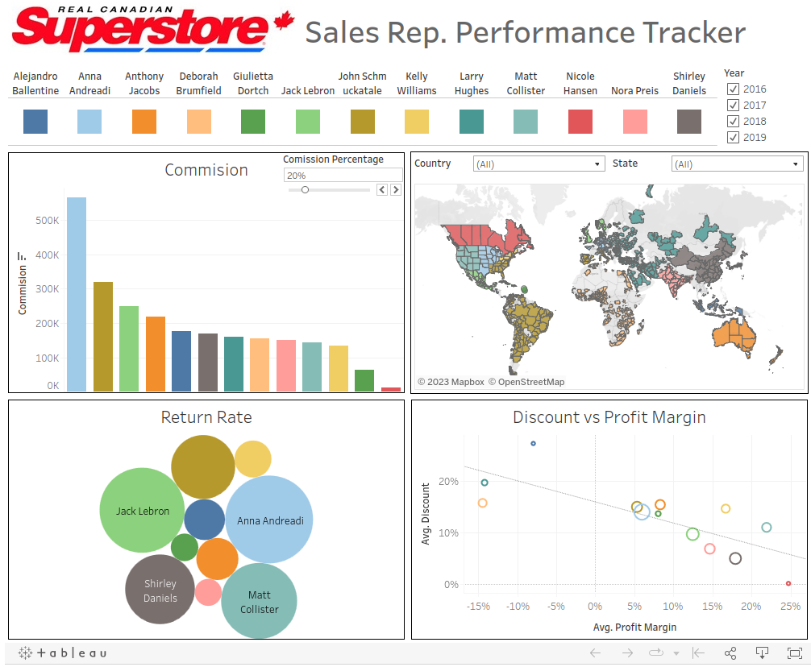

Example
Here you can see an example of a dashboard created on Tableau involving sheets, calculated fields, measures, etc. Above we can see an image of it, please see the interactive version here on Tableau Public.
Here you can see an example of a dashboard created on Tableau involving sheets, calculated fields, measures, etc. Above we can see an image of it, please see the interactive version here on Tableau Public.